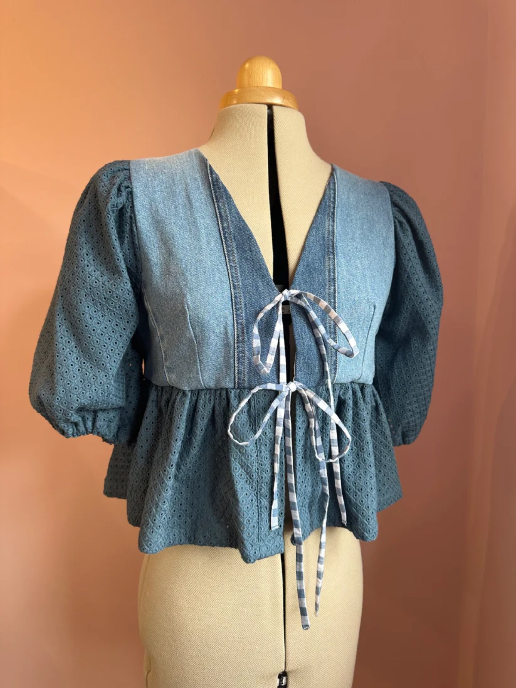
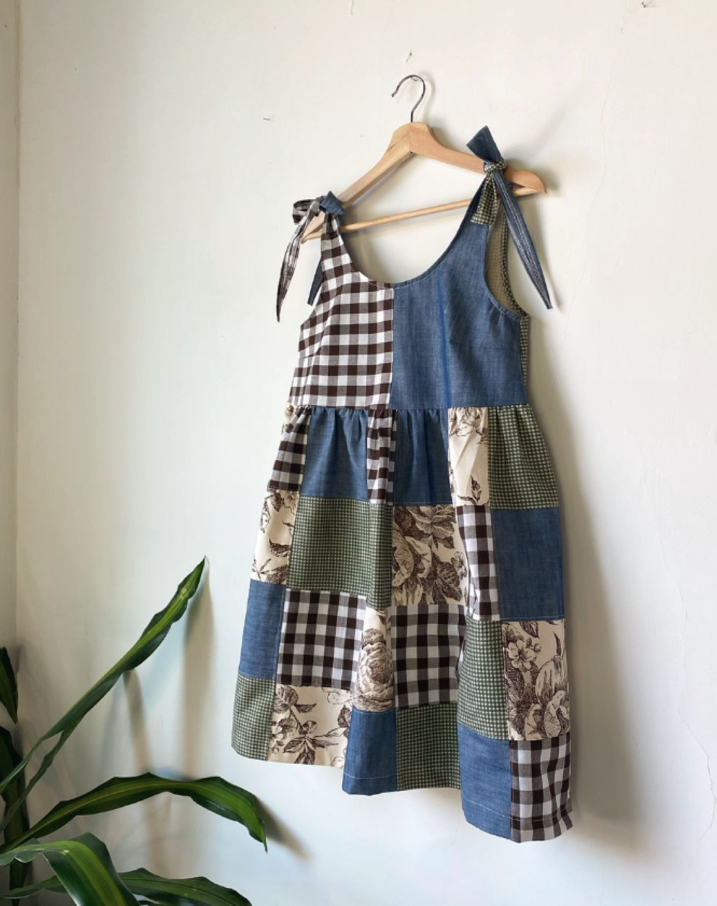
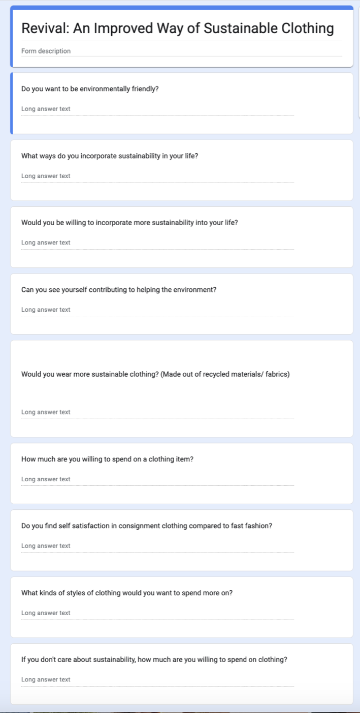
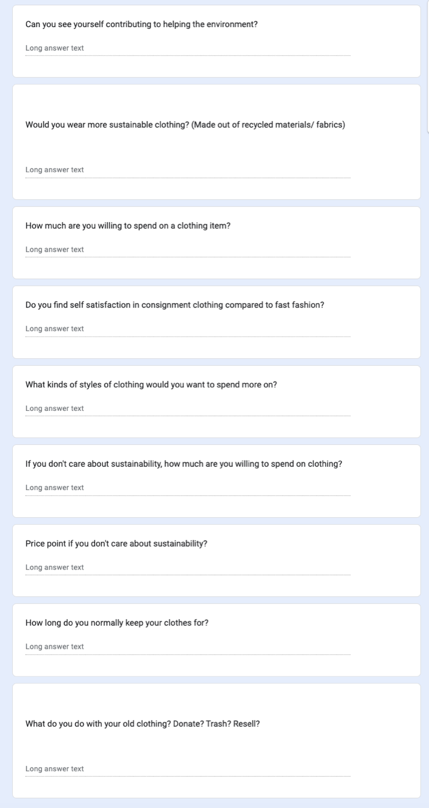
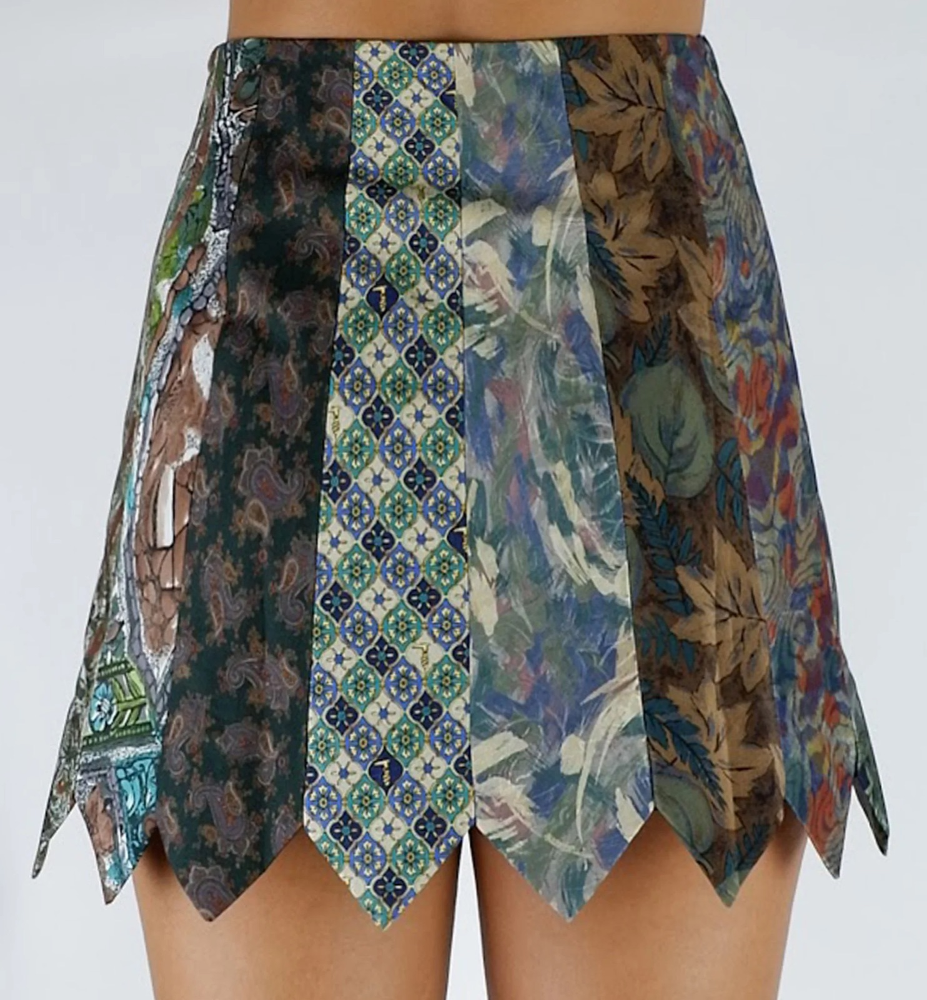
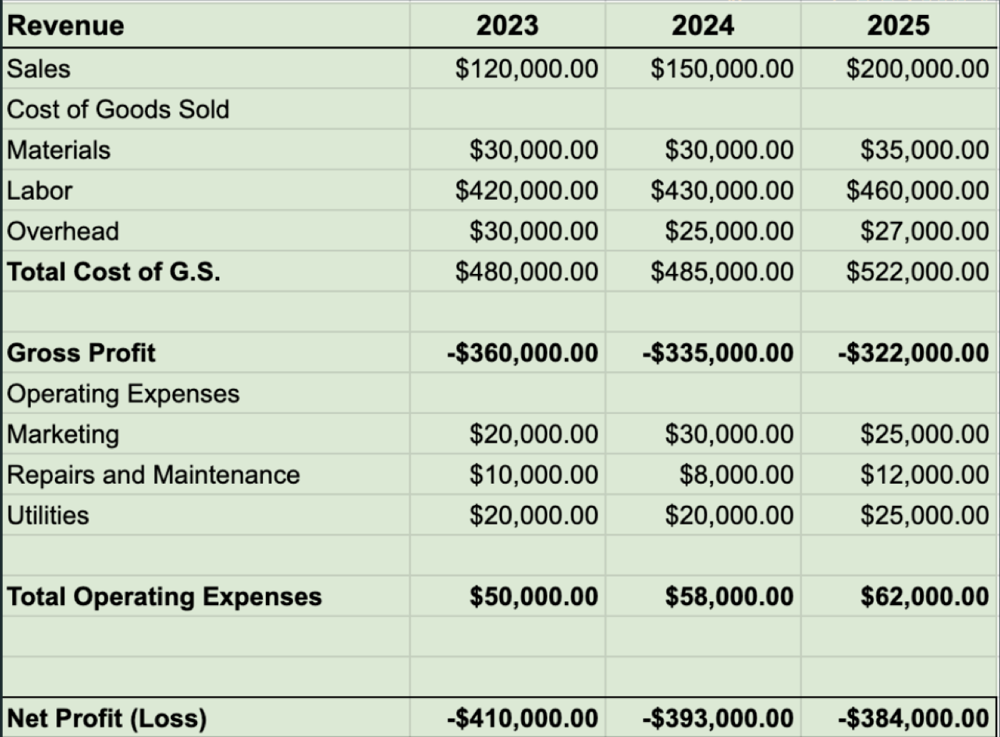

Case Study 06
Revival Clothing
The project involved creating a company focused on using recycled materials as an eco-friendly clothing option.

Project summary
A sustainable brand, built from research
My team and I spent several months developing a sustainable clothing company focused on using recycled materials. Throughout the project, we conducted extensive market research, refining various methods and ideas to create an eco-friendly brand. We employed primary market research through surveys and secondary research using online databases.
To minimize costs, we decided to implement a recycling and upcycling system, creating unique, one-of-a-kind clothing pieces from donated clothes and other recycled fabrics. Customers who donated clothes would receive a small credit toward our brand, Revival Clothing. We also explored partnerships with thrift stores to repurpose items they were planning to discard.

My role
Marketing Specialist & Market Researcher
Create a survey and send it out to potential customers
Create an effective and generalized marketing plan
Tools
- Canva
- Google Slides
- Zoom
- Google Forms
- EBSCOhost research
The process
My team and I explored various ideas before deciding to create a sustainable clothing brand. We carefully considered different approaches to ensure our brand could achieve success by the third year of business.
Once our concept was solidified, we conducted a validation and customer recruitment process, gathering insights from a diverse group of people to narrow down our target consumers. We then performed an industry and competitive analysis to identify how we could differentiate ourselves from competitors. We also drafted a rough financial analysis to assess potential profitability and concluded by developing a market strategy aimed at growing our customer base.

The survey
We surveyed residents in Monterey and Santa Cruz Counties because we believed Revival would begin as a local brand with both an in-person and online storefront, with plans for eventual expansion.


The challenges
The main challenge my team and I faced was finding a cost-effective and sustainable method for producing our clothing pieces. We aimed to offer competitive pay for our workers, maintain reasonable prices for our products, and uphold our commitment to sustainability. Balancing these goals proved challenging, especially when analyzing the projected finances.

Our findings
Within the scope of our project, our goal was to achieve profitability within three years. However, our overall net profit remained negative throughout all three years. While we projected a steady rise in gross profit, we also anticipated that the costs of items where we had limited buying power would increase over time, impacting our financial outlook.

Reflection
Revival Clothing may not have been projected to be successful in the first three years, but it was a valuable learning experience.
The project underscored the importance of making strategic sacrifices to ensure a company’s success. For instance, instead of establishing our own business and manufacturing plant, we could have partnered with a sustainable manufacturer to produce clothing from recycled materials. Collaborating with local boutiques to sell our clothes through their storefronts could also have saved costs while allowing us to focus on building our online presence.
Although we developed a solid concept within our limited time, our goals were too ambitious for the early stages of the company’s life.